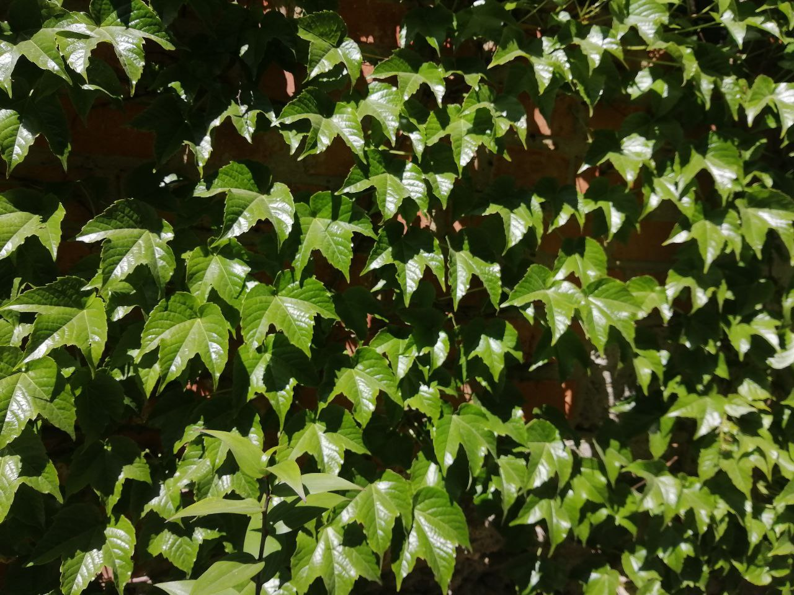
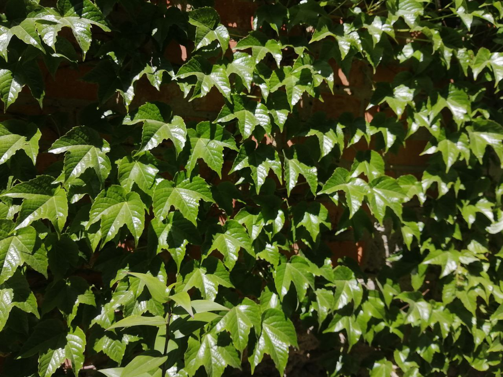

Чай, яким щодня насолоджуються понад 3 мільярди людей, є глобальним продуктом харчування з глибоким культурним корінням і значним економічним впливом. Від розвитку спільноти до стимулювання міжнародної торгівлі, чай об’єднує людей і традиції по всьому світу. ☕
База
Чорний Чай
Чорний чай - це чай який більшість з нас знає і любить. Це перше по що ми йдемо у магазин коли ми думаєм про звичайний запашний чай.
Зелений Чай
Смак зеленого чаю впливає на світові культури. Він стимулює торгівлю та підтримує фермерські спільноти, що робить його впливовим у всьому світі.
Кожен день люди випивають більш ніж 6 мільярдів чашок чаю. Це робить його найпопулярнішим напоєм у всьому світі, після нього кофе і безалкогольні напої (наприклад кола).
Крім того існує багато інших чаїв по всьому світу
Чаі
Чаі – це не просто чай, а культурне явище в Індії. Це міцна суміш чорного чаю та ароматних спецій, таких як кардамон, кориця, імбир та гвоздика.
Зелений Чай
Ерл Грей - чорний чай, настояний на олії бергамоту. Його смак і аромат мають цитрусову нотку. Сам чай досить популярний у Великій Британії та у всьому світі.